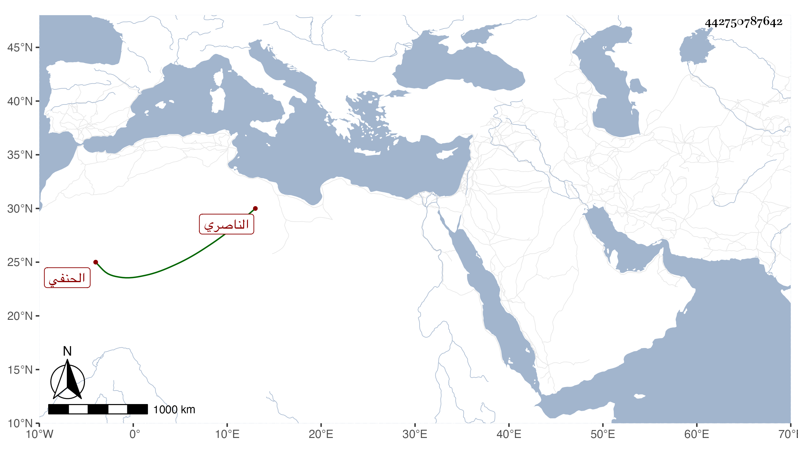

0902Sakhawi.DawLamic.ITO20230111-ara1.EIS1600.442750787642
Biography ID: 442750787642
357
محمد بن الجيبغا نظام الدين أبو اليسر وأبو المعالي الناصري الحنفي ويختصر فيقال له نظام . كان أبوه كما أخبر من أمراء الدولة الناصرية فولد له وقت صلاة الجمعة حادي عشرى شعبان سنة أربع عشرة وثمانمائة ولم يلبث أبو أن ذبحه الناصر لا لذنب في رمضانها مع جملة المذبوحين فنشأ يتيما في كفالة زوج أخته أركماس اليشبكي الطويل فحفظ القرآن والقدوري واللب ، ولازم البدر حسن القدسي شيخ الشيخونية فأخذ عنه واختص بخدمته ثم لازم ابن قديد في العربية وغيرها وكان مما أخذه عنه من كتب النحو شرح الحاجبة للسيد الركن المسمى بالوافية بقراءته والتوضيح لابن هشام ما بين قراءة وسماع وقطعة من شرح الألفية لابن المصنف وجميع متن اللب وشرحه لنقركار ومن غيره جميع الرسالة الشمسية في المنطق للكاتبي وشرحها للتفتازاني وقرأ البعض من توضيح التنقيح لصدر الشريعة ومن توضيح التلويح للتفتازاني علي محمد بن بهاو الخوافي السمرقندي وجميع شرح المنار للكاكي علي ابن الهمام ، وكذا قرأ على الشمني وأخذ الفقه والأصلين وغيرهما عن الأمين الأقصرائي والفقه والتفسير عن سعد الدين بن الديري بل سمع عليه البخاري ، ولم يقتصر على أئمة مذهبه بل قرأ على البساطي ملازاده في الحكمة وسمع عليه إلى القياس من العضد وإلى مبادئ اللغة من الحاشية وأخذ عن القاياتي وآخرين وأنه قرأ على شيخنا والمحب بن نصر الله الصحيح وسمع بعضه على ابن عمار والتلواني وابن خطيب الناصرية ومسلما علي الزين الزركشي ، وأجاز له الرواية المقريزي وناصر الدين الفاقوسي والبساطي وأجاز له في استدعاء بخط ابن فهد مؤرخ بسابع ذي الحجة سنة سبع وثلاثين خلق ، وتميز في العربية وأشير إليه بالبراعة فيها وشارك في المنطق والمعاني والبيان وغيرها من الفضائل واذن له غير واحد من شيوخه واختص بابن الظاهر جقمق وقتا ، وتصدر للإقراء فأخذ عنه الفضلاء وحدث بالصحيحين وغيرهما ، واستقر في تدريس الفقه بالجامع الطولوني عوضا عن الظهير الطرابلسي وبالحسنية برغبة الشمس الرازي وربما أفتى وهو ممن كتب في كائنة ابن الفارض وفي مسألة الرضاع ونقل فيها عن شيخه ابن الهمام ، وأكثر من زيارة قبور الصالحين ودام على ذلك سنين ، ولما رأى من هو دونه ترقى لما كان الظن تعينه له سيما حين أعطى تنبك قرا الدوادار الثاني مشيخة الجانبكية بعد الأمين الأقصرائي لمن هو من أصاغر طلبته مع كونه ممن كان يتردد للأمير ليقرأ عنده إنجمع بالكلية إلا نادرا وقنع برزقه من أقطاع وغيره لم يقصر عن الطلبة ونحوهم بالإطعام ونحوه بل ربما يحصل منه المدد للغرباء والغالب عليه الصفاء مع البهاء والحرص على الخير وسرعة الحركة التي تؤدي إلى نوع خفة وعدم التحري في المقال ولذا لا تركن النفس لكثير من كلامه ، وقد حج في سنة ثمان وخمسين وأصيب قبل ذلك بإحدى عينيه من لفح بغلة الولوي البلقيني عند باب الجمالية ويقال أنه كان أجرى ذكر بعض الأئمة بمالا يرتضى فكان ذلك كرامة لذاك الإمام . وبلغني أنه كتب حاشية على التوضيح وأخرى على الجار بردي وغير ذلك ، ولم يزل متوجها للإقراء مع الإنجماع إلى أن مات في سادس عشر صفر سنة اثنتين وتسعين بعد توعك يسير ودفن بتربة تجاه تربة أزبك الخارندار رحمه الله وإيانا واستقر في تدريس جامع طولون علاء الدين ابن الجندي المحلي نقيب الشافعي وفي الحسنية الشهاب بن اسماعيل وكلاهما من جماعته وقد كتبت في الشهادة عليه بالإذن لثانيهما خطبة افتتحتها بالحمد لله الذي جعل حياة العلم في نظام الدين وفضل العلماء بالاجتهاد في الإيضاح والتبيين مع الإخلاص والتوجه لنفع الموحدين ، ثم قلت وبعد فقد تشرفت بحضور الدرس الأخير من الشرح المشار إليه المعول في إزاحة ما يشكل من الفن عليه عند سيدنا ومولانا وعالمنا وأولانا الشيخي الإمامي الهمامي العلامي الفهامي المحققي المدققي شيخ المذهب الحنفي ومبرز الملبس الخفي بل شيخ الإسلام أوحد الأئمة الأعلام فارس فنون اللغة العربية التي هي تاج العلوم الآلية وحارس القوانين الأصولية والفروعية من انتشرت تلامذته في جل البلاد واشتهرت سيادته بانقطاعه عن ذوي المناصب من العناد نظام الدنيا والدين وزمام الفرسان في الميادين واضع خطة أعلى هذه السطور وجامع المحاسن التي بها مذكور بقراءة سيدنا الشيخ الإمام ذي المحاسن الوافرة الأقسام الفاضل الكامل العالم العامل الأوحد العلامة المحدث البسامة صدر المدرسين مفتي المسلمين أقضى القضاة المعتبرين الشهابي المعين فيه من له الوجاهة والتوجيه والتأصيل والتفريع والبحث الجيد والفهم السريع أبقاه الله بقاء جميلا ووقاه في طول حياته ببلوغ قصده أملا وتأميلا .
